庚子日
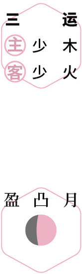
 迎日出
迎日出仲夏｜节气｜ 夏至 ｜时间｜ 六月廿一日至七月七日
今年夏至需特别注意的健康问题：心脏不适、疲乏无力、胆囊炎、腹痛、失眠
原料：桑椹、百合、莲子、酸枣仁、红糖。
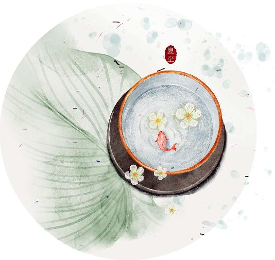
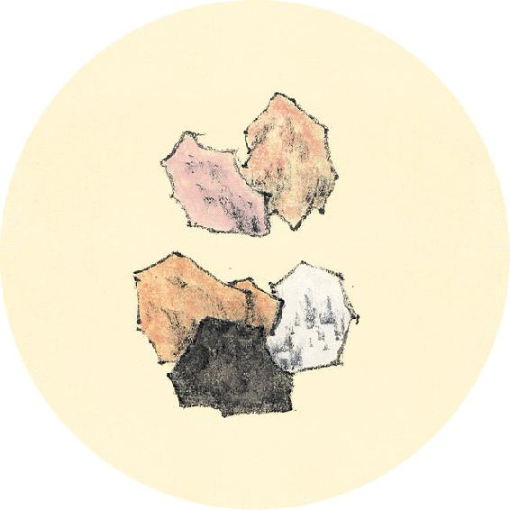
节气食方
黑桑椹，新鲜时是好吃的水果，晒成干果，就是一味良药，滋阴、养血、补肾、乌发、抗衰老，也是适合全家人的健康小零食。
血虚阴虚的人，特别是更年期的女性，可以常年吃。
今年夏至节气的桑果膏采用三气保健食方的配方：桑果百合四物膏，配方见5月13日。
夫五府者，身之强也。
——黄帝内经·素问·脉要精微论
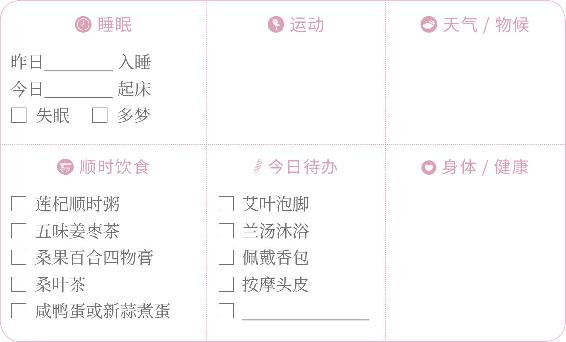

迎日出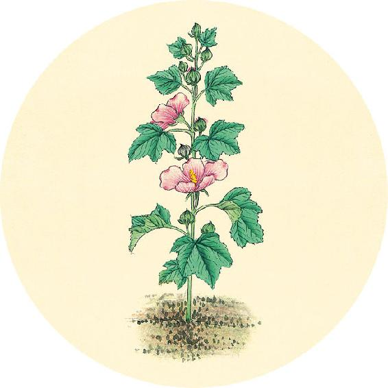
二十四节气茶养生
今年夏至节气品茶推荐：桑叶茶。
“人参热补，桑叶清补。”桑叶“清中有补”，不仅是中药，也是食物，是天然营养补充剂。桑叶的蛋白质含量特别丰富（霜桑叶的氨基酸含量可达19%）。据现代研究，它还含有神经营养因子，可以促进脑细胞生长和发挥功能，提升睡眠时长。
古代医家对桑叶功效的评述，见8月18日。
【释义】五府（指头为精明之府，背为胸中之府，腰为肾之府，膝为筋之府，骨为髓之府），是人身体强健的基础。
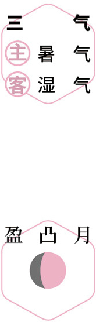
采桑子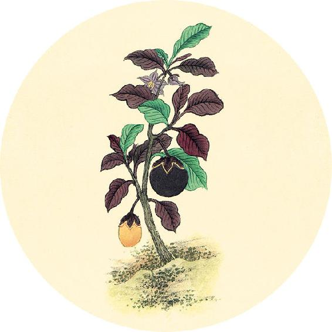
健康提示
夏至节气的养生功课：养心阴。
夏至时节，心血不足的人易失眠，可服五味子宁心益气，饮桑叶茶促进睡眠。
今年夏至特殊的养生要点——
今年夏至节气，痰湿重的人要特别注意保养。
保养重点：心、肺、胆。
容易出现的问题：心脏不适、疲乏无力、胆囊炎、腹痛、失眠。
头者精明之府，头倾视深，精神将夺矣。
——黄帝内经·素问·脉要精微论
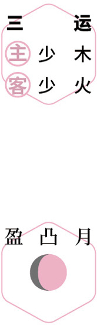
进补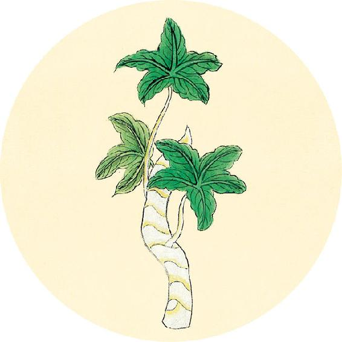
健康提示
古人夏季必佩香包，否则为失礼。端午节香包就是这种习俗的遗存。
用中药做成香包，有多种用途：防蚊虫、辟除人体的汗味、防疫病。
现代研究发现，防疫香包有抑制病毒感染引起炎症反应的作用，香包中药的挥发物能刺激血清IgA、IgG水平，提高人体免疫力。
【释义】头为精神之府，若头部低垂，目陷无光，说明精神将要衰败了。
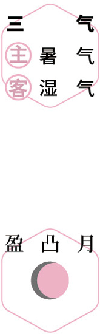
品香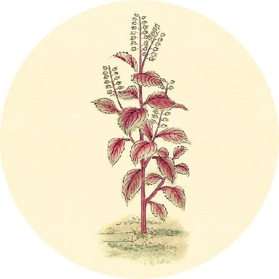
一候反思
夏至前后两周是否出现：
失眠 □ 是 □ 否 多梦 □ 是 □ 否
口干口苦 □ 是 □ 否 下午发热 □ 是 □ 否
心悸 □ 是 □ 否 手脚心热 □ 是 □ 否
耳鸣 □ 是 □ 否 掉发 □ 是 □ 否
有一个答“是”，翻到4月28日，在选项2打钩。
背者胸中之府，背曲肩随，府将坏矣。
——黄帝内经·素问·脉要精微论
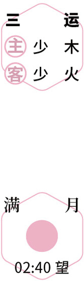
步月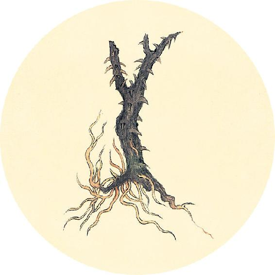
健康提示
滋阴补血的食材：黑桑椹
功能：滋阴补血，生津润燥。
主治：肝肾阴虚，眩晕耳鸣，心悸失眠，须发早白，津伤口渴，内热消渴，肠燥便秘。
——《中华人民共和国药典》
桑椹的吃法：
1. 当作干果零食直接吃。
2. 搭配枸杞、红枣等煮水饮用。
3. 熬制桑果百合四物膏（配方见5月13日）。
【释义】背为胸中之府，若背弯曲，肩内扣，说明心肺将衰了。
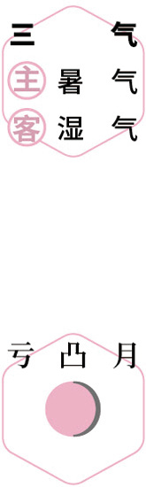
辟虫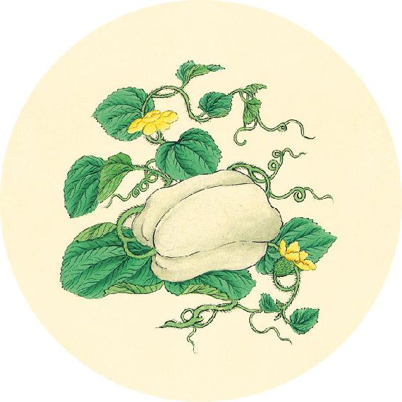
健康提示
很多孩子感染手足口病后有便秘现象，只要大便通了，病就更容易好转。平时也要保持肠道畅通。
下面这些食物有助肠道畅通排毒、祛湿热，适合儿童经常吃。
牛蒡：有助于肠道排毒，适合经常便秘而又长痘的人。它通便的作用是立竿见影的，而又相对温和，还有滋补的作用。牛蒡是蔬菜，可以放心给孩子吃。
（6月28日继续）
腰者肾之府，转摇不能，肾将惫（通“败”）矣。
——黄帝内经·素问·脉要精微论
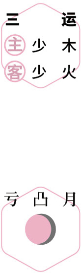
药浴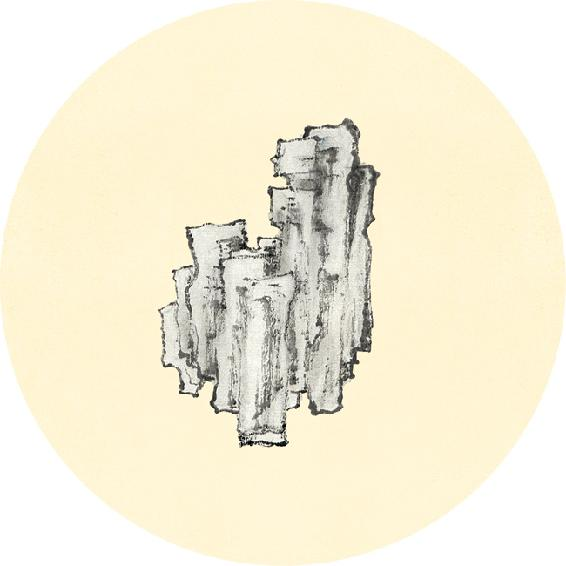
健康提示
罗汉果：对肠胃湿热引起的咽喉痛、痰多咳嗽很有效果。它含有天然的甜味料，用来配茶饮煮出来甜甜的，孩子爱喝，又不含糖分，不会发胖，不会出现龋齿。
马齿苋：是肠道健康的保护神，可以帮助排出肠道病毒。无论是肠炎腹泻还是便秘，都可以用到它。对手足口病也有很好的调理作用（食方见6月29日）。
【释义】腰为肾之府，若腰部转动不灵，说明肾气将败了。
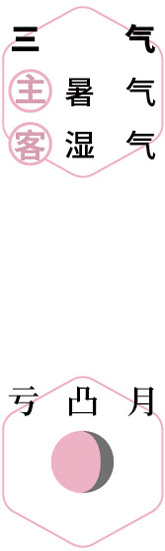
排毒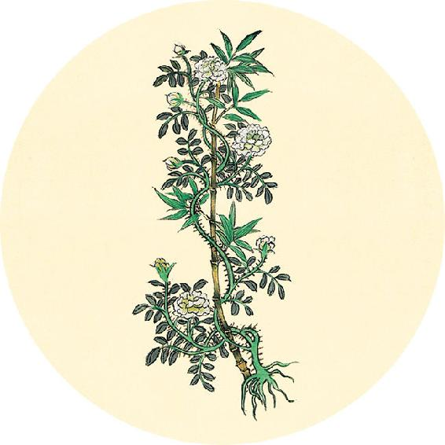
健康提示
手足口病/疱疹性咽峡炎的食方：马齿苋抗病饮
原料：新鲜马齿苋1斤（500克）、蜂蜜适量。
做法：马齿苋榨汁，加适量蜂蜜饮用。
功效：调理手足口病，预防日光性皮炎。
若找不到鲜品，可以去药店购买马齿苋干品60克，煮水饮用。
中药贴敷调理见11月1日清温手心贴，手足口病预防见5月28日到30日。
膝者筋之府，屈伸不能，行则偻附，筋将惫（通“败”）矣。
——黄帝内经·素问·脉要精微论
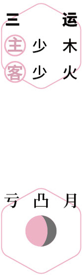
养心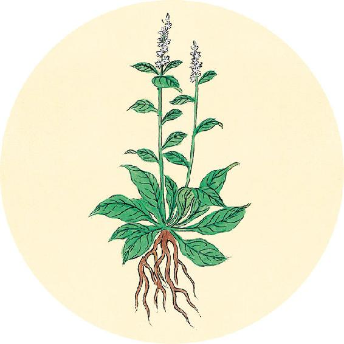
二候反思
夏至自我体检：
1. 前两周是否出现这些现象：
□ 失眠 □ 耳鸣 □ 盗汗 □ 心胸烦热
2. 前两周身体是否出现其他不适现象？在哪些部位？
3. 以上是每年反复出现的还是今年独有的？
今年新发生的有______________________________________
今年再次出现的有______________________________________
如果上述1中，有任意一项，请翻到12月1日选择食方的搭配。
【释义】膝为筋之府，若屈伸困难，身体弯曲需要依靠于他物才能行走，说明筋的功能将衰败了。
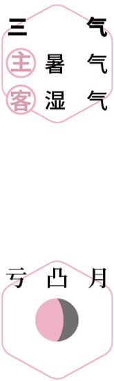
辟螨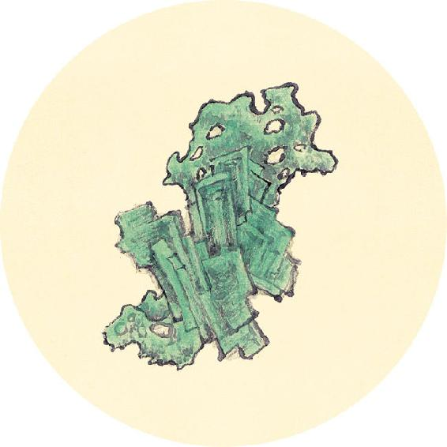
健康提示
疱疹性咽峡炎和手足口病虽然看起来有类似感冒的症状，但却是肠道传染病，是由肠道病毒引起的，用抗生素无效，注意不要用错药。
肠道病毒喜欢湿热，湿热重时更容易传播，所以每一年流行的程度不一样。在预防方面，不仅要防外界的湿热，也要清理身体内部的湿热。平时经常便秘的儿童要特别注意。
骨者髓之府，不能久立，行则振掉，骨将惫（通“败”）矣。
——黄帝内经·素问·脉要精微论
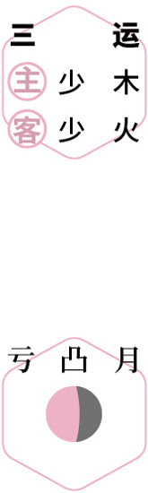
闻香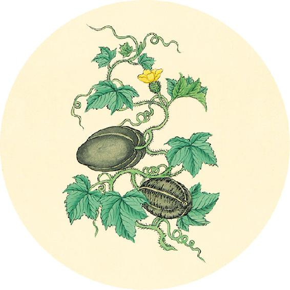
健康提示
古人的养生法：夏季常服五味子。
“五月常服五味子，补五脏之气。六月常服五味子，以益肺金之气，在上则滋源，在下则补肾。”
——唐·孙思邈
常服五味子的好处：补肾宁心、益气止嗽、止虚汗、润肺生津，调理儿童遗尿、糖尿病、男性肾虚，也是老年人的日常补品。
男性常服的好处：强阴、益精，调理梦遗滑精。
老年人常服的好处：调理长期咳喘（虚咳无痰）、夜尿、心悸、失眠。
【释义】骨为髓之府，若不能久站，走路震颤摇摆，说明骨的功能将衰败了。
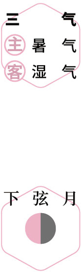
进补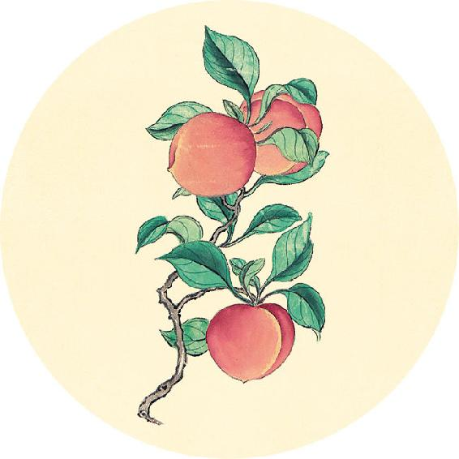
健康提示
今年入伏晚，三伏是30天。需要加强冬病夏治效果的人（可翻到7月16日自测），可以提前10天，从7月11日开始做伏前加强贴。
为什么夏天要做三伏贴？
三伏时，最好的排毒渠道是皮肤，利用三伏贴来排毒，可以达到冬病夏治的效果。三伏贴对于反复发作的咳嗽、哮喘、慢性支气管炎、关节炎效果尤其好。特别是小孩冬季爱感冒、长期咳喘的，坚持三年下来，就不容易复发。
得强则生，失强则死。
——黄帝内经·素问·脉要精微论
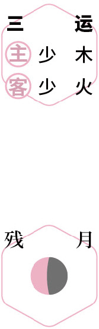
居家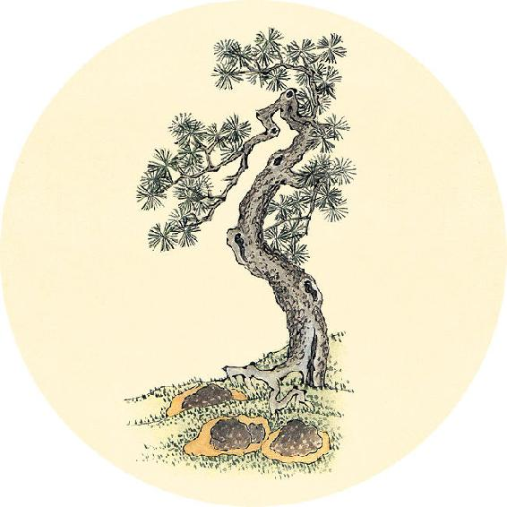
健康提示
家庭简易三伏贴基本材料
伤湿止痛膏或艾灸贴（空调房间、女性生理期、身体局部有寒，或遇阴雨天气，可以用艾灸贴）。
辅助材料（不是必需）：
生姜片、刮痧板或瓷勺、香油、真空气罐（没有可不用）。
做三伏贴当天饮用的茶方：贴伏茶
原料：玫瑰花、红糖。

【释义】五府（头、背、腰、膝、骨）强健，则生；五府衰弱，则死。（若脏气能够恢复强健，则虽病可以复生；若脏气不能复强，则病情不能挽回，人也就死了。——允斌注）
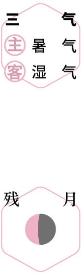
居家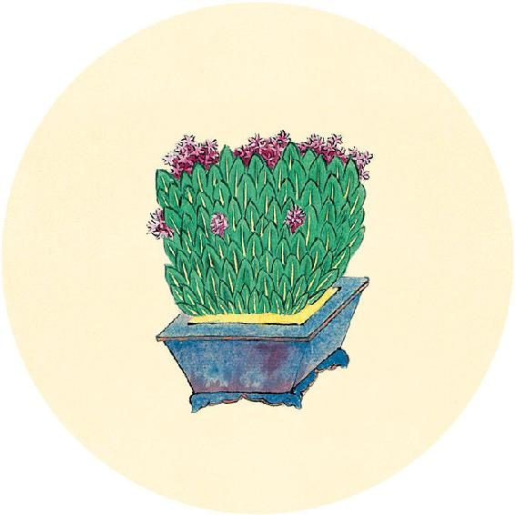
食材准备
后天进入小暑节气。
1.松花蛋红苋汤
原料：红苋菜、松花蛋、大蒜。
2. 辛丑岁三气保健方：桑果百合四物膏（从小满吃到入伏前，做法见5月13日）
原料：桑椹、百合、莲子、酸枣仁、红糖。
3. 辛丑岁三伏茶方：五味茱萸梅子汤（做法见10月5日）
原料：五味子6克、罗汉果1个、乌梅6个、大枣6个、山楂10克、甘草10克、川陈皮1/4到1/2个，气虚的人加黄芪15～30克。
4.三伏贴
材料：见7月4日。
反四时者，有余为精，不足为消。
——黄帝内经·素问·脉要精微论
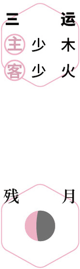
静养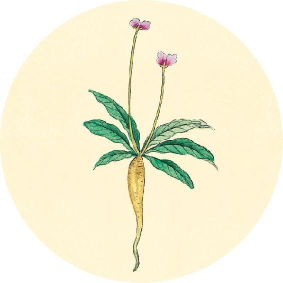
节气总结备
喝五味姜枣茶的次数________
喝桑叶茶的次数________
喝桑果百合四物膏的次数________
喝莲杞顺时粥的次数________
吃咸鸭蛋或新蒜煮蛋的次数________
药浴的次数________
身体哪些方面有改善______________________________________
【释义】脉气与四时之气相反的，若有余，是邪气胜了精气；若不足，是血气消损。
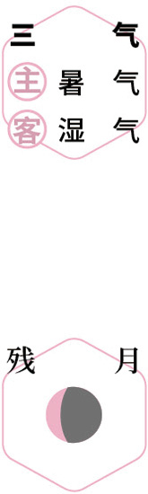
静养